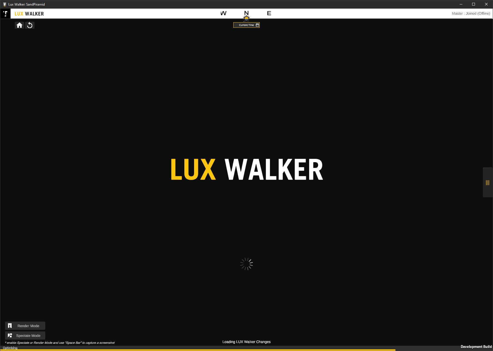
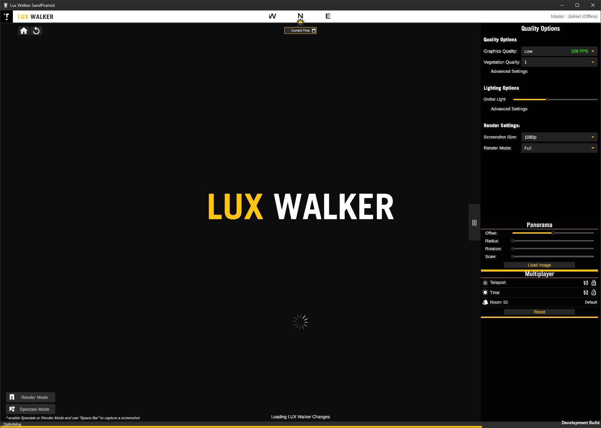
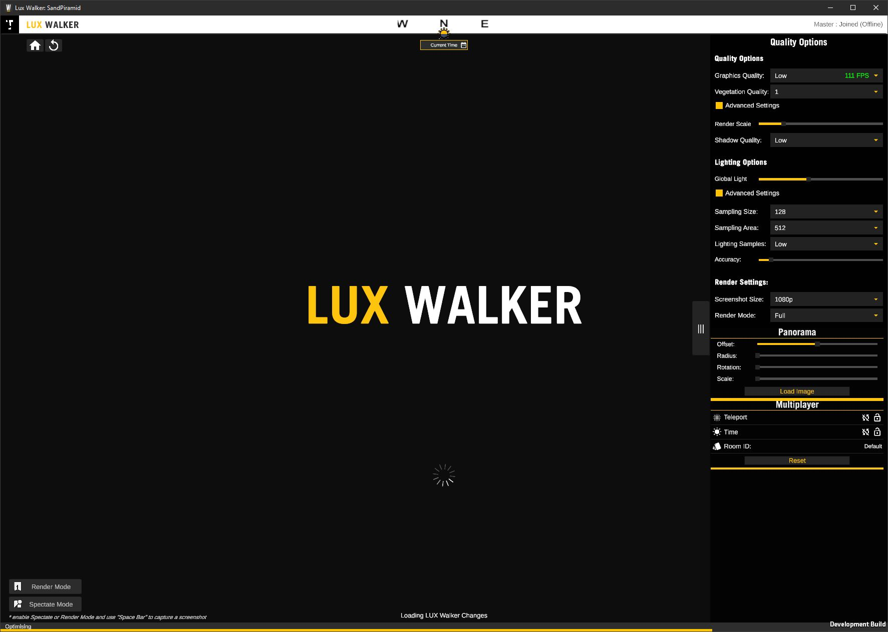

LUX Walker Settings¶
Some settings are only accessible using the mouse on the desktop.
Settings Panel¶
  Quality Options¶
Quality Settings
Graphics Quality - Increases sharpness of objects at an increase to performance cost. Vegetation Quality - Increases vegetation rendering distance at an increase to performance cost. Advanced settings
Render Scale - Manually Increase sharpness of objects at an increase to performance cost. Shadow Quality - Manually Increase shadow quality at an increase to performance cost.
Lighting Settings
Global Light - Increase or decrease the environmental light contribution in the scene.
Advanced settings
Sampling Size - Increases the lighting contribution size at an increase to performance cost. Sampling Size - Increases the lighting area that gets realistic lighting at an increase to performance cost. Lighting Samples - Increases lighting quality at an increase to performance cost.
Render Settings
Screenshot Size - Size of the Images captured by the spectator render camera. Render Mode - Quality of the Render Mode spectator camera.
Panorama¶
LUX Walker allows you to load a panorama as onto a cylinder that renders behind other objects.
Offset - Height offset from Horizon
Radius - Radius of the Cylinder that holds the panorama.
Rotation - Rotation of the Cylinder that holds the panorama.
Scale - Scale of the Cylinder height that holds the panorama.
Load Image - Load Panorama from hard drive.
Note
Combinations of Radius and Scale will allow you to get correct aspect ratios.
Removing the background in an image editing program and saving as a .PNG will blend the panorama with the background.
Multiplayer¶
Lock Teleport - Sync teleport across networked users
Lock Time - Sync time across networked users
Room ID - Room information